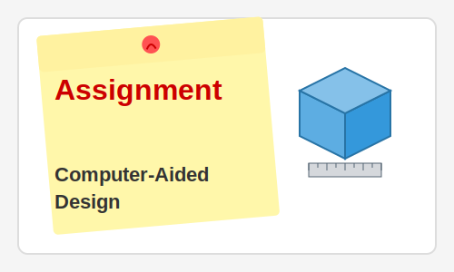

Week 3: Computer-Aided Design
In Week 3, we explored Computer-Aided Design (CAD) software and techniques. CAD is a fundamental skill for digital fabrication, allowing us to create precise digital models that can be manufactured using various techniques.
Key Learning Outcomes
- Understanding different CAD software types: parametric, direct modeling, and sculpting
- Learning to use 2D and 3D design software
- Creating designs for different manufacturing processes
- Understanding file formats and interoperability between software
- Applying best practices for parametric design
CAD Software Explored
During this week, I experimented with several CAD tools:
- Fusion 360 for parametric 3D modeling
- FreeCAD as an open-source alternative
- Inkscape for 2D vector design
- OpenSCAD for programmatic modeling
Assignment Deliverables
For this assignment, I had to:
- Create a parametric 3D model that demonstrates design intent
- Export the model in formats suitable for different fabrication methods
- Document the design process with screenshots and explanations
- Explain design decisions and parameter relationships
My Project: Modular Component System
I designed a parametric modular component that can be adjusted and combined in various ways. The design demonstrates how parameters can control dimensions, features, and assembly relationships.
Reflection
CAD skills are essential for turning ideas into physical objects. Learning different types of CAD software has broadened my understanding of design approaches and given me more tools to work with. I particularly enjoyed exploring parametric design, as it allows for rapid iteration and modification based on changing requirements.
The skills learned in this week will be applied throughout the Fab Academy program as I design and create various projects.